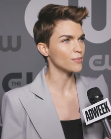

Ruby Rose Langenheim (Melbourne, Victoria; 20 de marzo de 1986), es una modelo, DJ, artista de grabación, actriz, presentadora de televisión y ex-VJ de MTV australiana. Rose surgió en la atención de los medios como una presentadora de MTV Australia, seguido de varios trabajos temporales de modelo de alto perfil, sobre todo como la cara de Maybelline en Australia. Además de su carrera como modelo, ha coorganizado varios programas de televisión, como Australia's Next Top Model y The Project en Network Ten además es considerada una de las mujeres más hermosas según varias revistas.
Rose comenzó su carrera en la actuación a partir de 2008, con su debut en la película australiana Suite for fleur. En 2012, tuvo un pequeño papel en el drama Around the Block. Tal vez sus papeles más reconocidos internacionalmente han sido en la serie de televisión Orange Is the New Black como Stella Carlin y en la película Pitch Perfect 3. Aunque su vida personal a veces eclipsa su carrera de actuación y modelaje, se ha granjeado elogios por su trabajo en series y películas.
El 7 de agosto de 2018, se anunció que Rose protagonizaría la serie de Batwoman en la cadena The CW.2 Sin embargo, el 19 de mayo de 2020 anunció que dejaría la serie
Rose nació en Melbourne. Su madre, Katia Langenheim, artista de profesión, la tuvo a los 20 años de edad, y ella la describe como uno de sus modelos a seguir. Siendo una niña se mudó con frecuencia, viviendo en zonas rurales de Victoria, en Tasmania y en Surfers Paradise, antes de asentarse finalmente en Melbourne. Como adolescente, asistió a la University High School y al Footscray City College. Ruby es la ahijada del boxeador Lionel Rose, indígena de Australia, y la bisnieta de Alec Campbell, soldado australiano y último superviviente de la Batalla de Gallipoli.
Rose asumió su lesbianismo a la edad de 12 años. A causa de su orientación sexual, sufrió insultos verbales y abuso físico por parte de sus compañeros de clase. Durante dos años mantuvo una relación con Phoebe Dahl, y llegaron a comprometerse en marzo de 2015, pero rompieron con el compromiso en diciembre de ese mismo año. Después, empezó una relación con Harley Gusman, pero la apretada agenda de las dos hizo imposible la relación, lo que llevó a la ruptura. Para el lanzamiento de la canción On Your Side, de The Veronicas, Ruby se reencuentra con su expareja Jessica Origliasso, integrante del dúo con su hermana gemela, la cual hace que regenere su amor. Ruby y Jessica estuvieron juntas hasta su ruptura en abril de 2018.
